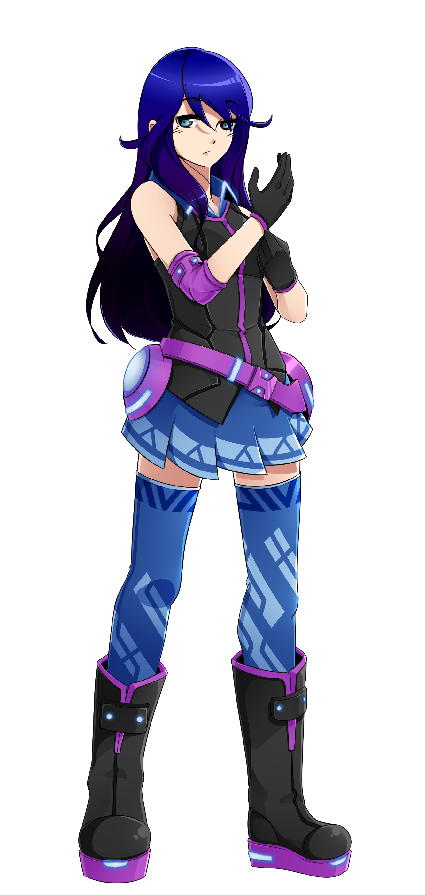
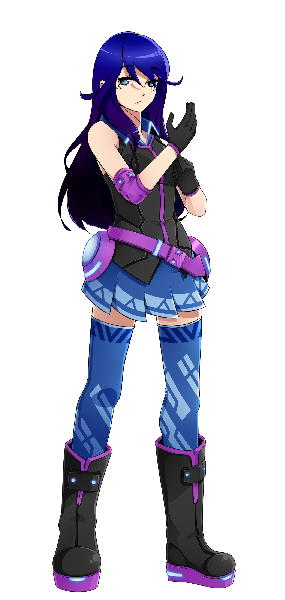

Jí Lián Xía

name: Jí Lián Xía
age: 17
date of birth: 5/27
hair color: dark blue and dark violet to black
hair style: long and flowing, down to her waist
skin tone: pale
eye color: grayish blue
height: 5 ft 2.2 in
ethnicity/race: Japanese/Chinese descended
citizenship: Tŏngī Kōtei-fū
key attribute: uninterested
right-handed
body type: petite
Character Bio/Personality:
Jí Lián is mostly unconcerned with things. She will actively avoid conflict and only fight when absolutely necessary.
She avoids going outside when possible, which is part of the reason behind her extremely pale skin.
Jí Lián is less awkward than her younger self and is willing to approach people when she needs something.
She loves reading books in her spare time, and when possible does so at the beach, albeit with a lotion that completely blocks the sun.